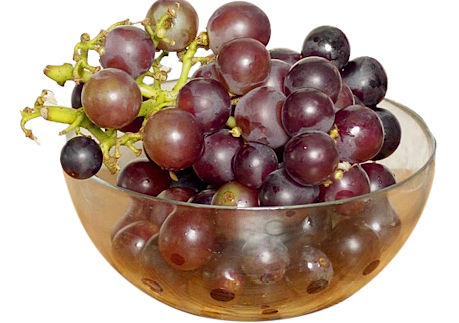
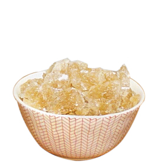
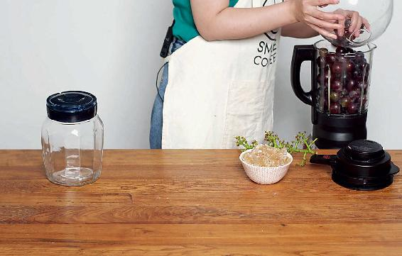
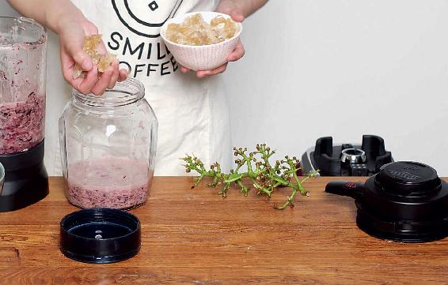
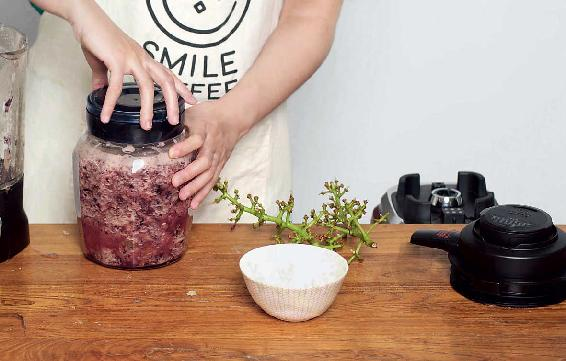
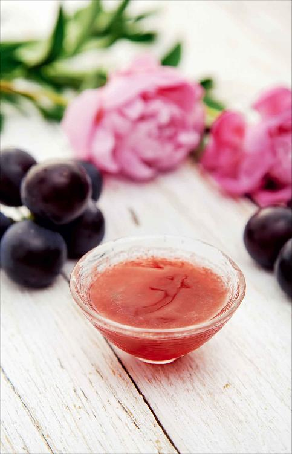
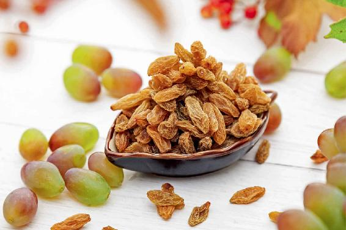

秋天正是葡萄大量上市的季节，我们可以在家自己来酿造葡萄酒，下面我来分享一个我家长辈们酿造葡萄酒的配方。
我们为什么要在家里自酿葡萄酒呢？主要是为了吸收葡萄的特殊营养。
葡萄的皮和籽是含有特殊营养的。但我们在吃葡萄的时候，往往都把皮和籽给吐掉了，吸收不到这部分营养。而自己在家里酿造葡萄酒就可以让皮和籽一起充分地发酵，从而获取其中的营养。
吃葡萄时，葡萄的皮和籽一般人都是不吃的。如果我们自己酿葡萄酒，就能摄取到葡萄皮和葡萄籽的营养。
其实，在家里自己来酿葡萄酒，也不是很麻烦，最重要的就是要保持全程的清洁干净、无油就可以酿造成功。
下面我来分享自酿葡萄酒的方法，这是我家长辈用的，也是中国的古法。
我们小时候读古诗，“葡萄美酒夜光杯，欲饮琵琶马上催。”这里面所说的“葡萄美酒”，就是指自酿的葡萄酒，它跟西方传过来的红酒还是有一定的区别。
自酿的葡萄酒在保存的过程中，酒汁还会继续发酵，它的味道也会越变越好，我家现在存的自己酿的葡萄酒最老已经有十五年了，这个味道真的是非常让人沉醉。
自酿葡萄酒


原料：葡萄、冰糖的比例为5∶1。

做法：
1.先把葡萄洗干净，晾干水汽，然后准备一个特别大的玻璃罐子。玻璃罐子要事先清洗干净，晾干水分，不能沾油，不能沾水。

2.把葡萄捣碎。您可以用两个方法：一种是用榨汁机慢慢地、一杯一杯地给它榨碎；另一种方法就是用擀面杖或者用手把它压破、捣碎。然后一层葡萄一层冰糖地放进玻璃罐里，不要全部装满，装到七八分满就可以了。

3.装好葡萄后，拧紧盖子。先把它放在阳台上，让它晒上一天，这样可以加速发酵。然后再把它搬到阴凉的地方保存。等一个月以后把它打开搅拌一下，把籽和皮等残渣过滤掉。以后就可以长期来保存了。
允斌叮嘱：
自酿葡萄酒虽然用什么样的葡萄都可以，但您如果想要酒色更红、更好看，可以使用深色的葡萄。

曾经，我把我家自酿的有七个年份的葡萄酒，带到电视台的录制现场。那一次我们是录新年的年夜饭，需要用自酿的葡萄酒来作为年夜饭的酒类饮料。
当时，电视台请了一位从香港来的美食家。他有一个非常厉害的本事，就是你给他任何一杯红酒，他只要闭上眼睛品尝一下，立刻就能告诉你，这个红酒是产自哪一个酒庄、欧洲的哪个地方，然后它的年份是多少，是几几年的葡萄酒。编导当时想跟他开个玩笑，就把我带去的葡萄酒也倒入酒杯请他品尝。我们都认为这是一个玩笑，他不可能品出来。因为我带的这个葡萄酒并不是出自那种欧洲有悠久传统的专业酒庄。

结果我们都没想到。他品了一口，思索了一会儿，又品了一口，过了好一会儿，他说这一次他还真的不知道，这个酒是来自哪一个酒庄的，但是他可以确切地说，这个酒的年份是七年以上的。他说得真准确，因为我带的这个酒刚好是七年的酒，所以我们都非常佩服他，觉得他真的是一位美食大师。
同时我们也发现，酒的的确确不管是用什么方式酿造，随着年份的增加，风味的改变是清晰明确、有迹可循的。这个也是发酵的魅力。
如果您有时间、有兴趣，不妨利用葡萄上市的季节，自己在家里也酿制一些葡萄酒。
等五年、十年、二十年后，孩子长大了，考上大学了，打开一坛酒，大家喝一喝。孩子结婚了，再打开一坛酒喝一喝，那种感觉想必是非常幸福的。
允斌解惑：蜂蜜也可以用来酿葡萄酒
茉莉：能用红糖酿葡萄酒吗？好的老冰糖实在难找，找来找去大都是白砂糖加工提炼的。
允斌：可以的。甘蔗红糖的味会比较浓重。也可以用蜂蜜来酿。
向日葵（年年有余）：我自酿的葡萄酒颜色很透亮，但不是很甜，有点酸，后味有点涩，我酿对了吗？
允斌：如果尝到正常红酒的味道就是对了，红酒不会很甜的。